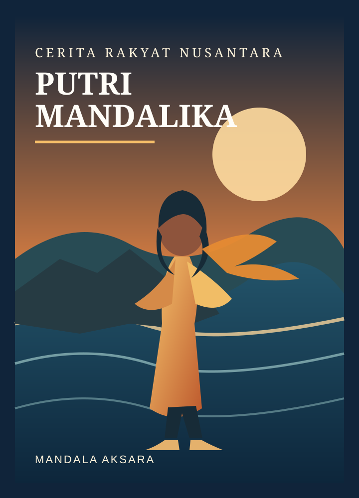

Putri Mandalika
Kisah seorang putri yang menghadapi perebutan dan pertentangan, lalu mengambil keputusan demi menjaga kedamaian. Cerita ini juga berkaitan dengan tradisi Bau Nyale di Lombok.
Baca cerita lengkap →Kisah dari Berbagai Penjuru Indonesia
Nusantara menyimpan beragam cerita yang diwariskan dari generasi ke generasi. Kisah-kisah di ruang ini dituturkan kembali oleh Mandala Aksara dengan bahasa Indonesia masa kini agar lebih dekat dengan pembaca, tanpa melupakan asal daerah, nilai budaya, dan ragam versi cerita yang hidup di masyarakat.

Kisah seorang putri yang menghadapi perebutan dan pertentangan, lalu mengambil keputusan demi menjaga kedamaian. Cerita ini juga berkaitan dengan tradisi Bau Nyale di Lombok.
Baca cerita lengkap →Kisah tentang sebuah janji, kemarahan yang tak terkendali, dan legenda asal-usul Danau Toba serta Pulau Samosir.
Baca cerita lengkap →Kisah tentang perjalanan seorang anak, hubungan keluarga, dan konsekuensi dari sikap durhaka.
Segera hadirKisah yang lekat dengan lanskap alam dan tradisi lisan masyarakat Sunda.
Segera hadir